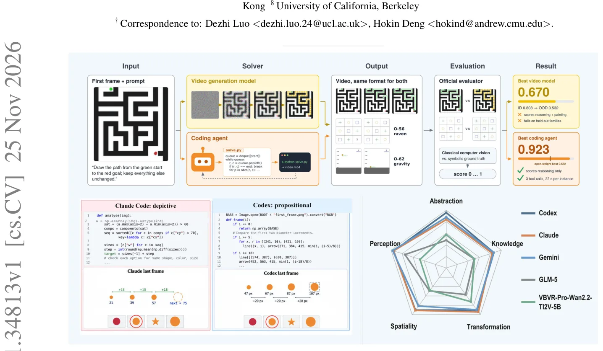
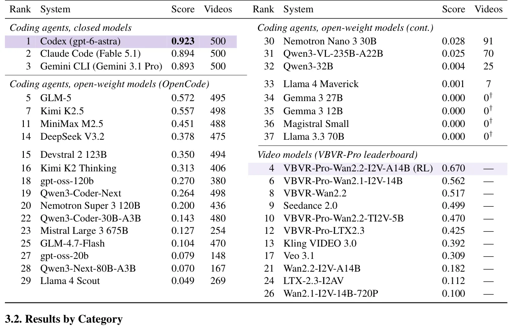
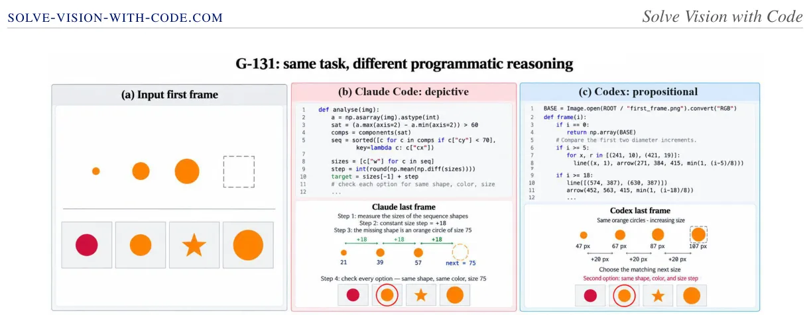
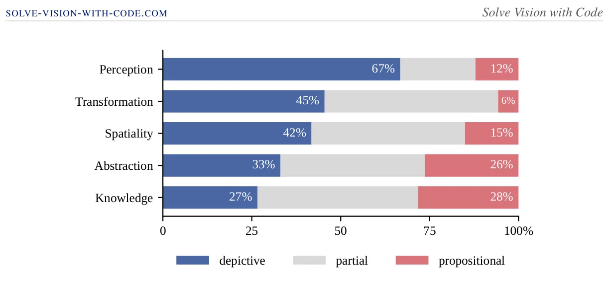

O Problema do Raciocínio Visual Nativo
Modelos de geração de vídeo têm avançado rapidamente, produzindo clipes fotorrealistas e coerentes temporalmente. Essa capacidade levou pesquisadores a questionar se esses modelos podem atuar como "raciocinadores visuais". A ideia é que, ao invés de apenas renderizar descrições, o modelo produza vídeos que constituam soluções para tarefas estruturadas. O benchmark VBVR-Pro-Bench foi criado para testar essa hipótese, oferecendo um ambiente onde a resposta correta é uma função determinística da primeira imagem e de um prompt em linguagem natural.
O paradigma dominante assume que o raciocínio visual é mais nativo e confiável quando ocorre diretamente nos pixels do vídeo. O modelo "denoiseia" (remove ruído) a resposta visual, aprendendo implicitamente as regras da tarefa através da sua arquitetura generativa. No entanto, essa premissa não foi testada contra uma alternativa simbólica sob condições idênticas. Se a solução pode ser computada a partir da imagem inicial, por que não permitir que um agente de código a expresse explicitamente?
Este paper, intitulado "Solve Vision with Code", propõe uma mudança de meio controlada. Em vez de gerar pixels, um agente de código recebe o mesmo input (imagem e prompt) e escreve um programa que renderiza o vídeo de resposta. O avaliador oficial, baseado em regras e visão computacional clássica, permanece inalterado. O objetivo é determinar se a síntese de programas é uma rota mais confiável para o raciocínio visual do que a geração direta de vídeo.

Metodologia: O Protocolo de Avaliação
A avaliação ocorre no VBVR-Pro-Bench, que consiste em 500 instâncias divididas em 100 famílias de tarefas. Cada família tem cinco instâncias e é classificada em uma ou mais das cinco categorias cognitivas: Percepção, Abstração, Conhecimento, Transformação e Espacialidade. O input para todos os sistemas é uma imagem de 1024x1024 pixels e um prompt textual. A saída esperada é um vídeo que execute a tarefa descrita.
Para os agentes de código, o setup é rigoroso. Cada agente opera em um container de CPU isolado, com acesso apenas a bibliotecas padrão de imagem e ciência de dados em Python. Há um limite de tempo de 30 minutos por instância e apenas uma tentativa permitida. Se o agente não entregar um vídeo, a nota é zero. É proibido o uso de modelos generativos de imagem ou vídeo; o agente deve usar apenas o que pode ser computado a partir da imagem inicial e do prompt.
Foram testados três agentes de código fechados (Codex com gpt-6-astra, Claude Code com Fable 5.1 e Gemini CLI com Gemini 3.1 Pro) e 23 modelos de código de peso aberto (open-weight), como GLM-5 e Kimi K2.5. Os resultados dos modelos de vídeo foram retirados do leaderboard oficial do VBVR-Pro, sem re-execução, para garantir a comparabilidade. O melhor modelo de vídeo, treinado com Reinforcement Learning (RL) específico para o benchmark, serviu como baseline superior.
Resultados: A Superioridade dos Agentes de Código
Os resultados mostram uma vantagem clara e consistente para os agentes de código. O melhor agente, Codex, alcançou uma pontuação média de 0.923 nas 500 instâncias. Claude Code e Gemini CLI ficaram logo atrás, com 0.894 e 0.893, respectivamente. Esses valores superam significativamente o melhor modelo de vídeo, o VBVR-Pro-Wan2.2-I2V-A14B, que foi treinado com RL usando o próprio avaliador como recompensa. O modelo de vídeo alcançou 0.670, uma diferença de mais de 0.25 pontos.
Entre os modelos de código de peso aberto, o GLM-5 liderou com 0.572, superando todos os modelos de vídeo, exceto o otimizado com RL. Outros modelos, como Kimi K2.5 (0.557) e MiniMax M2.5 (0.451), também demonstraram capacidade competitiva. A baixa pontuação de muitos modelos open-weight não se deveu à falta de raciocínio, mas sim a falhas de entrega: muitos não invocaram ferramentas de código, pararam antes de executar ou exauriram o tempo limite, resultando em zero pontos.
É crucial notar que a quantidade de uso de ferramentas (tool use) não correlacionou diretamente com a pontuação final, além do mínimo necessário para gerar o vídeo. Os agentes fechados, embora tenham custos operacionais muito diferentes, tiveram desempenhos consistentemente altos. Isso sugere que a confiabilidade na síntese de código é uma propriedade robusta dos modelos de linguagem de ponta, não apenas um artefato de configuração específica.

Análise de Categorias e Tipos de Programa
Os agentes de código lideraram em todas as cinco categorias cognitivas. A margem de vitória foi menor em Transformação e maior em Percepção. Essa distribuição revela nuances sobre como o raciocínio é executado. Os autores classificaram os programas gerados em duas categorias comportamentais: "descritivos" (depictive) e "proposicionais" (propositional).
Programas descritivos são aqueles que navegam pela imagem no momento da execução (run-time). Eles medem propriedades visuais, como larguras ou posições, e calculam a resposta dinamicamente. Isso se assemelha a uma simulação mental espacial. Já os programas proposicionais operam com valores codificados rigidamente (hard-coded). O agente identifica a resposta durante sua sessão de raciocínio e o programa apenas a renderiza, sem calcular nada novo.
A análise mostrou que tarefas de Percepção e Espacialidade tendem a gerar programas descritivos. O agente precisa "olhar" para a imagem para resolver o problema. Por outro lado, tarefas de Conhecimento e Abstração geram mais programas proposicionais. O agente infere a regra ou o fato durante o pensamento e o codifica como constante no script. Essa divisão sugere que o raciocínio visual não é monolítico; ele se adapta à natureza simbólica ou espacial da tarefa.


Implicações para a Natureza do Raciocínio
Os resultados desafiam a noção de que o raciocínio visual nativo (via pixels) é a única ou melhor rota para tarefas visuais. A síntese de código permite uma representação explícita e verificável da lógica. O fato de os agentes fechados superarem modelos de vídeo, mesmo aqueles treinados especificamente para o benchmark, indica que a capacidade de raciocínio simbólico e a navegação estruturada oferecem vantagens significativas.
A distinção entre programas descritivos e proposicionais oferece insights sobre como os agentes de código processam informações visuais. A existência de programas descritivos sugere que, mesmo com um backbone de linguagem, os agentes podem simular a manipulação de imagens analógicas através de operações simbólicas. Isso ressoa com teorias cognitivas humanas, onde a rotação mental e a física intuitiva são atribuídas à simulação visual, enquanto a aplicação de regras é descrita em termos discretos.
No entanto, os autores alertam que isso não estabelece um limite teórico para os modelos de vídeo. É possível que modelos de vídeo futuros, com arquiteturas ou treinamentos diferentes, alcancem ou superem os agentes de código. A conclusão atual descreve o estado da arte presente: para tarefas cujas soluções são funções determinísticas da imagem inicial, o código é uma ferramenta mais confiável do que a geração de pixels.
Conclusão: Código como Meio de Raciocínio
O paper demonstra que, sob condições controladas, agentes de código são raciocinadores visuais mais fortes do que modelos de geração de vídeo. Ao escrever programas, os agentes explicitam a lógica da tarefa, evitando os erros implícitos da denoising de pixels. A capacidade de alternar entre raciocínio descritivo (navegando a imagem) e proposicional (codificando regras) torna a síntese de código uma abordagem versátil e robusta.
Para a comunidade de desenvolvedores e cientistas de dados, a mensagem é clara: quando a tarefa visual pode ser decomposta em passos lógicos ou medições, a abordagem de "programar a resposta" pode ser mais eficaz do que "gerar a resposta". Isso abre caminho para sistemas híbridos que combinam a precisão simbólica do código com a flexibilidade visual dos modelos generativos, em vez de tratar o raciocínio visual como uma propriedade exclusiva da manipulação de pixels.
O que fica
- Agentes de código fechados alcançam média de 0.92 no VBVR-Pro-Bench, superando o melhor modelo de vídeo em mais de 0.25 pontos.
- A abordagem substitui a denoising de pixels pela escrita de programas que renderizam a resposta, mantendo o mesmo avaliador oficial.
- Identifica-se uma divisão entre programas 'descritivos' (navegam a imagem) e 'proposicionais' (codificam a resposta), refletindo tipos de raciocínio.
- Limitações incluem a natureza determinística das tarefas e a exclusão de modelos de vídeo que não usam RL específico do benchmark.
Paper original: Solve Vision with Code: Coding Agents Are Stronger Visual Reasoners Than Video Models
Comentários
Nenhum comentário ainda. Seja o primeiro.